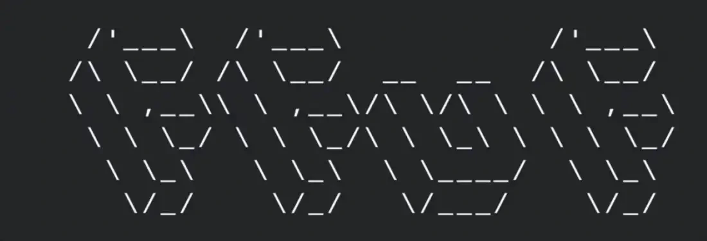

Projects

SOC Home Lab
Implemented a home SOC lab containing ELK Stack, Fleet, PfSense, Snort, OpenVPN
Windows Administration
Created a Active Directory Lab to enhance system administrator skills

Fuzz
Python Script which takes a wordlist as input and sends request to server and prints the response code